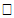
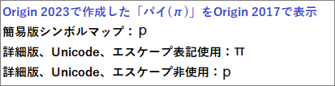

UnicodeおよびANSI文字をテキストラベルに追加
Access-ExtCharSet
Unicode文字をテキストラベルに追加
Origin 2018よりUnicodeをサポートしています。テキストラベルにUnicode文字を追加する方法は複数あります。
- 目的の文字の4文字の16進数文字コード(例: 03BB で "λ")を知っている場合は、テキストラベルを開き、16進コードを入力し、ALT+Xを押します。
- 2022bより前のバージョン:テキストラベルの作成中に、右クリックしてシンボルマップを選択します。フォントを選択してUnicodeにチェックをつけ、4文字の16進数文字コードをUnicode値(16進)に入力します。シンボルを確認して挿入をクリックします。
- 2022bとそれ以降のバージョン:テキストラベルの作成中に、右クリックして挿入:シンボルマップを選択します。簡易版シンボルマップが開き、カテゴリごとに一般的な文字が表示されます。詳細ボタンをクリックすると、”詳細な”シンボルマップが開きます。
- 既存のテキストラベルで右クリックしてプロパティを選択します。テキストオブジェクトのテキストタブで、シンボルマップボタン
 をクリックします。バージョンに応じて、詳細なシンボルマップまたは簡易版シンボルマップが開きます (最新バージョンでは、それらのダイアログの下部にある詳細/シンプルボタンを使って、2つのシンボルマップダイアログを切り替えることができます)。詳細なシンボルマップダイアログでは、フォントを選択してUnicodeにチェックをつけ、4文字の16進数文字コードをUnicode値(16進)に入力します。シンボルが正しいことを確認し、挿入 をクリックします (例: フォント = Arial で Unicode値(16進) = 03BB)。
をクリックします。バージョンに応じて、詳細なシンボルマップまたは簡易版シンボルマップが開きます (最新バージョンでは、それらのダイアログの下部にある詳細/シンプルボタンを使って、2つのシンボルマップダイアログを切り替えることができます)。詳細なシンボルマップダイアログでは、フォントを選択してUnicodeにチェックをつけ、4文字の16進数文字コードをUnicode値(16進)に入力します。シンボルが正しいことを確認し、挿入 をクリックします (例: フォント = Arial で Unicode値(16進) = 03BB)。
- テキストラベル作成中に、ブラウザページから文字をコピーしてラベルに貼り付けます。
 | 上記全ての操作で、選択したフォントに挿入しようとしている文字が含まれていることを前提としています。もし、フォントに入力したい文字がない場合、Originは文字を表示できません。代わりに、文字入力スペースに空の矩形（）が表示されます。このような場合は、フォントを変更します。
|
ANSI文字をテキストラベルに追加
これは、Origin 2018およびUnicodeサポートより前の古い方法です。これらの操作で、ANSI文字をテキストラベルに追加できます。Originはどちらの方法も使用できます。
「インプレース」編集方法の使用
- 特殊文字を追加したいテキストラベルの場所をクリックします。
- 右クリックして、シンボルマップを選択します。
- フォントを設定し、必要に応じてシンボルを選択し、挿入 をクリックします。
別の方法として、ANSIコード (シンボルマップまたは標準表から入手可能) を知っている場合は、文字を直接挿入することもできます。
- キーボードのNum Lockを有効にします。
- ALTキーを押しながら0を入力し、続けて（数値キーを使用して）ANSI文字コード(10進)を入力します。
- ALTキーを離すと、文字が挿入されます。
オブジェクトプロパティダイアログにテキストを入力する場合
- テキストオブジェクト上で右クリックして、プロパティを選択します。
- 目的の記号の文字 (例：πの場合は小文字の"p") を入力し、それを強調表示してから、ギリシャ文字のボタン
 をクリックします (ギリシャ文字のボタンはエスケープシーケンスを挿入することに注意してください)。
をクリックします (ギリシャ文字のボタンはエスケープシーケンスを挿入することに注意してください)。
- または、フォントのドロップダウンからSymbolに設定し、小文字の"p"を入力すると、直接"π"として入力されます。
|
Note: 個々のフォントには、それぞれ異なるANSI文字群があります。 フォントセットの文字のコードを調べたい場合、ウィンドウズの文字コード表（古いシステムではアクセサリーの中のシステムツール、またはアプリリストにあります) を使ってください。
|
2018より前のバージョンのユーザとデータを共有する
Origin 2018より前のバージョンでは、OriginはUnicodeをサポートしていません。したがって、新しいバージョンを使用していて、古いソフトウェアのユーザとデータを共有する場合は、次の点に注意する必要があります。
- 簡易版シンボルマップで文字を挿入しないでください。Origin 2017以前では、文字が正しくレンダリングされません。
- 詳細なシンボルマップを使用してUnicode文字を挿入する場合は、エスケープ表記を使用のチェックををオンにしてください。
- 
 | Origin 2023以降、Origin は、Origin 2017以前のバージョンと互換性のあるOPJプロジェクトファイルを保存しません。しかしながら、個々のウィンドウファイル (OGG、OGW など) は2017以前と共有できます。
|